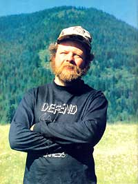
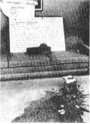
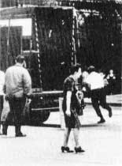

The Plowboy Interview
By Dave Foreman
January/February 1985
No Compromise in Defense of Mother Earth
In 1980, from out of the ranks of such staid and respected environmental organizations as The Wilderness Society, the Sierra Club, and Friends of the Earth, a controversial "non-organization" took form, embracing the name and unflinching doctrine of Earth First! (always with the "!").
Earth First! endorses just about any nonviolent means of protecting what remains of the American wilderness, including, unofficially, at least a form of last ditch environmental activism called monkeywrenching.
While the Earth First!ers call themselves deep ecologists and no-compromise environmentalists, their critics (of whom there are many) hold that radicals is a more appropriate tag. Either way, Earth First!'s brand of environmental activism sometimes gels results where more moderate and socially acceptable approaches fail. And EF! gets public attention for the causes it supports, with its name, slogans, philosophies, tactics, and members names and faces showing up in the media with increasing frequency.
MOTHER began watching EF! closely more than a year ago, when we interviewed writer and outspoken environmentalist Edward Abbey, an avid supporter of the group. (See the Plowboy Interview in MOTHER NO. 87.) Then, lo and behold, when we interviewed Pulitzer Prize-winning poet Gary Snyder (MOTHER NO. 89), we discovered that he, too, is an Earth First!er. Our curiosity aroused, we scrutinized back issues of the Earth First! newspaper to learn more. Then, this past summer, staff writer David Petersen sat around the camp fire with a contingent of Earth First!ers at a rendezvous in the scenic and environmentally troubled Cabinet Mountains of northwestern Montana.
As it turned out, these "terrorists" (as they were described by a local newspaper) impressed our man in Montana as sensitive, intelligent, and devoutly committed to the cause of saving what little pristine beauty there is left in the lower 48 states.
After the meetings, speeches, and rap sessions were concluded, our writer interviewed one of Earth First!'s founders and driving forces, Dave Foreman. We were surprised to learn of this "radical" environmentalist's impressively nonradical background.
After graduating from the University of New Mexico, Foreman plunged into volunteer environmental activism. He coordinated the 1972 Gila Primitive Area reclassification campaign for conservationists in his home state of New Mexico and, in the doing, produced a poster that caught the eye of the western office of The Wilderness Society.
In early 1973 the society offered Foreman the title and responsibilities of Southwestern Issues Consultant, from which position he eventually became the Southwest representative for the organization. Then, in January of 1978, Dave Foreman traded his dusty cowboy garb for a business suit, and moved to the nation's capital to serve as the society's chief lobbyist.
Little more than a year later, Foreman was back in his home state on a six-month sabbatical, attempting to recover from "bureaucratic burnout. " But the recovery didn't come about, and rather than return to the political pandemonium of the society's Washington, D.C., headquarters, he elected to stay on in New Mexico, resuming his previous duties there as Southwest representative. Six months later, after eight years' association with The Wilderness Society, he resigned.
But he didn't remain idle: Within a few months Foreman had pooled his talents and energies with those of a handful of friends-most of them with backgrounds and experience similar to his, and all of them disenchanted with what they saw as the timidity and plodding inefficiency of many of the larger environmental groups-to form Earth First!
Is Earth First! a boon to Planet Earth ... or, as its critics claim, a pack of rabble-rousers who merely disrupt the system and stir up trouble?
Let's see what Dave Foreman has to say about it.
PLOWBOY: The Wilderness Society is celebrating its 50th anniversary this year and boasts a membership of 60,000 and a professional staff of 55. It's one of the largest and most respected environmental lobbying organizations in the country. Why, exactly, did you resign one of the key positions in the society?
FOREMAN: While in Washington, I came to realize that, because of the rules we were playing by, we were being lobbied more effectively than we were lobbying. We'd go in to do business with administration officials-even those who were supposedly friendly toward the environment-and come out the losers almost every time.
As an example of how it often went, I'll mention an episode with Rupe Cutler. Rupe was assistant secretary of agriculture at the time, and thus presided over the U.S. Forest Service. He was also a former assistant executive director of The Wilderness Society, so naturally we thought, "Oh boy, here's someone in the administration we can talk to. He's one of us! "
Consequently, with our hopes up and our defenses down, we went in to talk to him about problems with RARE II-the second Roadless Area Review and Evaluation Act, which had to do with deciding which national forest roadless areas would receive the protection of official wilderness designation and which would not. But instead of being responsive to the needs of the environment, Cutler said something like, "Well, you know, the president is in real political trouble in the West. The timber industry is coming down on his head . . . the miners here ... the ranchers there... the off-road people everywhere. You guys need to back off a little and give us some room to maneuver politically."
And it happened like that time and time again; we'd come out of those meetings having made all the concessions, rather than having gained any. We bent over backward to be reasonable and credible and politically pragmatic. And by contrasting that timid stance with the emotional, hard-line, no-compromise approach taken by the mining, timber, and livestock industries, and by the off-road vehicle people in their lobbying efforts, it wasn't hard to figure out why they were winning and we were getting only the crumbs, if that.
After suffering through several experiences similar to that, I and several of my peers in the society and other major environmental organizations finally came to the conclusion that the environmental movement, and the Earth, needed people who had the guts to say what had to be said without compromising even before opening their mouths. To answer that need, we decided to form a group that would consciously not try to gain political credibility, that would consciously not try to become pan of the political establishment. Our group would operate outside the political system and make it known that we had fundamental differences with the worldviews of the political/industrial establishment.
In short, those of us who founded Earth First! based its goals around the philosophies of deep ecology.
PLOWBOY: That term-deep ecology-gets tossed around a lot these days, and seems to hold different meanings for different users. What is Earth First!'s interpretation of deep ecology?
FOREMAN: The philosophy of the Western world-in fact, the philosophy of just about the entire industrialized world right now-is anthropocentric. That is, it assumes that the human race is at the center of, and is the reason for, all life on this planet. Further, anthropocentrism says that everything should be considered as valuable or valueless according to its material worth to humans.
With a human-centered philosophy like that-which can be traced back to the book of Genesis-it's easy to justify exterminating species at the rate of ten a day as we're doing now, and it's easy to accept the clear-cutting of irreplaceable old-growth forests, and it's less difficult to swallow-literally-polluted water and air... so long as the human race gains something from all the destruction, even if the gains are trivial and temporary, as they usually are.
Deep ecology takes just the opposite view. It goes back to John Muir's central insight that the human animal is only one of several million species of living things sharing the limited resources of this planet. And further, even though we are more intelligent and thus more powerful, we have no preordained right to totally modify, develop, and otherwise exploit the entire planet for our own use and whim.
Deep ecology says that every living thing in the ecosystem has intrinsic worth and a nature-given right to be here. The grizzly bear, for example, has the right to exist for its own sake-not just for its material or entertainment value to humans. Wilderness has a right to exist for its own sake, and for the sake of the diversity of life-forms it shelters; we shouldn't have to justify the existence of a wilderness area by saying, "Well, it protects the watershed, and it's a nice place to backpack and hunt, and it's pretty."
Deep ecology sees things as being interconnected, which they are. It recognizes that each species is an integral part of what keeps the Earth alive and healthy. Furthermore, deep ecology goes beyond the individual and says that it's the species that's important. And more important yet is the community of species that makes up a given bio-system. And, ultimately, our concern should be with the community of communities -the, ecosystem.
Deep ecology is a whole new worldview, a whole new way of looking at things-and it's also the oldest. If we could reach back in time and DNA memory to the Pleistocene, and talk to our Neanderthal forebears, they'd be astounded that there was any other worldview. That's because primitive, organic peoples know instinctively that everything is connected, that humans aren't the ultimate or sole reason for life on this planet.
So when we say "Earth First!," we're saying what we feel-that the well-being of the Earth and all its life-forms comes first, and that humans should realize that they're only a part of it, rather than a part from it.
PLOWBOY: In an article you wrote for the October 1981 issue of The Progressive, you said that Earth First! supports-and I'm quoting you here-"politics in the streets, civil disobedience, media stunts, and holding the villains up to ridicule" in order to protect the Earth from further industrial encroachment. What have been some of your group's actions along those lines?
FOREMAN: Our most successful media stunt was back in March of 1981, when we unfurled a 300-foot-long strip of custom-sculpted black plastic down the face of Glen Canyon Dam in Arizona to simulate a crack. And even though we didn't contact the media, the stunt got a tremendous amount of coverage, and continues to get coverage. It set the tone for the Earth First! style. [EDITOR'S NOTE: For a discussion of Glen Canyon Dam and why so many southwestern environmentalists and wilderness supporters long for its demise, see the Plowboy Interview in MOTHER NO. 87.]
And we've staged several demonstrations that have been quite successful in focusing public attention on environmental issues. For example, when James Watt spoke to the Western Governors' Conference at Jackson, Wyoming, a few years ago, we had 300 people show up to stage what was probably the noisiest, most energetic anti-Watt demonstration ever held.
When Watt came outside to shake hands with the crowd, this big bear of a guy named Howie Wolke-who's a Jackson resident, a professional guide, a former Friends of the Earth staffer, and one of the founders and driving forces of Earth First!-broke into the ranks of those who were there to support the secretary's rape-the-forests policies, grabbed Watt's hand and crushed it in his, and said, "Secretary Watt, I'm Howie Wolke, and I organized this demonstration against you."
Naturally, that put the Secret Service people into a frenzy, and they tore Watt free of Howie's grasp and hustled him inside. When that happened, a bunch of loggers-who had come to Jackson from the Louisiana Pacific lumber mill in Dubois, Wyoming, to make trouble for us-looked around and noticed that we had them considerably outnumbered, and quietly slipped away and headed home.
The upshot of it all was that the environmental causes we were there to champion got the lion's share of media attention, while Watt and his supporters got nothing but red faces.
PLOWBOY: What has Earth First! accomplished along the lines of directly aiding the environment?
FOREMAN: One of our greatest direct-intervention accomplishments so far took place in 1983, in the Kalmiopsis Wilderness of southwestern Oregon. The designated wilderness area itself consists of only about 150,000 acres within the Siskiyou National Forest. But the 250,000 or so acres immediately encircling the Kalmiopsis is de facto wilderness-that is, wilderness in fact, even though it doesn't have congressional designation as such.
The northern portion of this adjoining de facto wilderness is called the North Kalmiopsis Roadless Area, which comprises about 150,000 acres. So that's the scene-designated wilderness surrounded by a ring of de facto wilderness, surrounded by national forest.
The trouble started when the Forest Service decided to build a logging access road along the ridge of Bald Mountain to divide the designated wilderness from the roadless area to the north. The road would have come to within six inches of the wilderness boundary in some places, and even the Forest Service's own soil scientists were against it.
The purpose of the proposed road was to provide access to log out the old-growth forest up there, which is the most diverse coniferous forest in the world. It contains more than 20 species of conifers and is incredibly important old-growth habitat-possibly the center of the evolution and diversity of all conifers on Earth.
Other environmental groups, including the Sierra Club and the Oregon Natural Resources Council, had filed appeals and struggled in the courts and with the Forest Service and politicians to try and stop the road . . . and they'd failed.
Then we got a letter from somebody who worked for the Siskiyou National Forest, asking us for help. So we went in and met with some local folks and decided on a blockade of the road's construction. We expected severe opposition, so everybody who was to be involved with the action underwent several hours of nonviolent-tactics training in order to be prepared.
In all, we staged seven blockades over a two-month period. Forty-four EF!ers were arrested and went to jail. We got a great deal of media attention, and through it helped make people in Oregon aware of the issue. Our blockades bought time and slowed construction on the road, so that the Oregon Natural Resources Council and Earth First! were able to file a lawsuit based on the inadequacy of the Forest Service's RARE II Environmental Impact Statement.
The suit was a resounding success. We asked for a temporary restraining order on June 30, 1983, and got it the following day. The road was stopped, and we had a preliminary injunction against its continuation. It was a major victory for Earth First! and for the thousands of Oregonians who-once they were made aware of what was happening in and to their state-wrote letters, made phone calls, and attended meetings to help get the road stopped.
Then, this past summer. President Reagan signed the Oregon Wilderness Bill, which excludes the North Kalmiopsis Roadless Area from official wilderness designation. And, worse yet, it releases all roadless areas not designated as wilderness in the bill from further consideration. In effect, the bill overruled the judgment of our law
Living by the Green Rule
The following text is excerpted from an address delivered by Dave Foreman at the 1984 Earth First! rendezvous held near Libby, Montana, this past July. We present Foreman's talk here because it showcases-in a way difficult to bring out in an interview-the emotion and conviction that drive this firebrand faction of the environmental movement.
Dave Foreman
As recently as 150 years ago-less than the span of three human lifetimes-extensive areas of America were still as wild and pristine as they had been since emerging from the ice of the Pleistocene. Many of our grandparents still tell stories they heard as children from those who actually knew an America that was rich and green and unfenced, and alive with buffalo and grizzly bears and passenger pigeons and those primitive, natural natives we now call American Indians.
But no more. In just a few generations, we and our forebears have taken the most magnificent and diverse of all the continents on Earth-in essence, the Pleistocene, with its great flowering of large animals, those thundering herds of biomass-and we have turned it into freeways and condominiums and Pac-Man and Pop Tarts. And we call that progress. We call that civilization.
Is it?
Our critics maintain that we in Earth First! are radicals and misfits, that we can't relate to society, that there's something wrong with us because we 'd rather pull such stunts as lying down in front of bulldozers and getting ourselves arrested in order to focus public attention on the needs of nature-instead of plodding along lost in the crowd, satisfied to squander our lives cruising the freeways in overpriced cars, and huddling in condos, and playing Pac-Man, and gobbling Pop Tarts.
Are we insane? Are we crazy because we see the insanity in what passes for sane these days?
Back in the Pleistocene, when grizzlies roamed this land by the tens of thousands, along with saber-toothed cats, and dire wolves, and mammoths, and mastodons, and even 500-pound beavers . . . back then, humans knew their rightful place in the big picture. In those days, a person would have been laughed out of the tribe for inventing such a bizarre philosophy as the one that drives Western thought today-the belief that the world was created just for us, and that we are meant to have dominion over everything in it. Back then, as natural people, we knew our proper place in the world and, as a result, the Earth knew balance and beauty and plenty.
Today, in order to restore that natural balance, it's time for the environmental movement to quit kowtowing. It's time to abandon the meek-and-mild act and to point to the Cabinet Mountains and to the Rocky Mountain Front and to Yellowstone country and to the Appalachian wilderness, and say, "This land is one of the few things that represent sanity in the world today!" And it's time that our society learned to respect the grizzly and the other threatened and endangered species for what they are-living beings that have the same right to exist as we do.
It's time we stand up, puff our chests out, and say to those who are destroying nature, "No more! This is where we make our stand. And if you intend to cut down the last old-growth Douglas fir in Oregon, you’ll have to cut me first! If you want to kill the last grizzly in the Cabinet Mountains, then you'd better use the first bullet on me! If you plan to dam the last wild river in California, you’ll have to dump the first load of concrete on me!"
It's time we tell these growth-crazed tyrants that they're the ones who are crazy . . . that they're living in an insane world driven by insane values. . . that they have no idea what humanity has been given by nature and how close they are to destroying what little is left of it. . . that they don't know anything about what's truly valuable in life, or about what sacredness is.
Aldo Leopold said that a thing is right when it tends to promote diversity, integrity, and intelligence-and wrong when it tends to do otherwise. That's the Green Rule, the ultimate standard of ethics.
The Green Rule tells us, for example, that it's not enough just to work to save the grizzly from extinction in the lower 48. states-we have to expand in population and range. When the first European walked wide-eyed across this land, there were as many as 100,000 grizzlies here. Now there are perhaps 800 left below the Canadian border, and those are going fast. We need to restore them to their former and rightful range. . . to the Gila Mountains of New Mexico, to the Kaibab Plateau of Arizona, to the high Uintas of Utah, to the San Juans of Colorado, to the Marble Mountains of California, to the Kalmiopsis of Oregon, to the Selway-Bitterroot and the River of No Return of Idaho, and to the North Cascades of Washington. That's how we save the grizzly bear ... and it's how we save ourselves.
suit, which meant that we no longer had an injunction against the building of the Bald Mountain road. Naturally, we expected the Forest Service to go back in immediately and complete the road and begin harvesting timber.
But that was when we got our second pleasant surprise of the Kalmi-opsis campaign ... the new forest supervisor for that area announced that the Forest Service had no immediate plans to start work on the road. There are no plans to do anything more with it for several years-which is interesting, since there are no more legal roadblocks to stop it. What it amounts to is that our blockade was so well received by the public, especially in Oregon itself, that the Forest Service is shying away from another confrontation with us. It's conclusive evidence of the power of nonviolent direct action.
PLOWBOY: What are Earth First!'s priorities for the near future?
FOREMAN: We'll continue fighting critical threats to wilderness. Right now, Oregon Earth First! is engaged in another nonviolent blockade to prevent clear-cutting in the Middle Santiam and Cathedral forests in western Oregon. There are stands of 300-foot-tall Douglas fir in there, and it's the last significant block of such giant old-growth trees of that species anywhere in the world, second in biomass per acre only to certain redwood forests. So naturally, in their unbounded wisdom, the Forest Service wants to clear-cut the area! Oregon Earth First! has been blockading there for the past couple of months. And, since our stated goal is to protect all the remaining old-growth forests in Oregon, we expect the struggle to continue for a long, long time.
Another of our immediate and major concerns is the steady and rapid decline of the grizzly bear population in the lower 48 states. We feel that Earth First! can play a significant role in that battle-which, of course, is why we're holding our annual rendezvous here in the Cabinet Mountains of Montana this year.
In the coming weeks and months, we plan to draw media attention to the grizzly issue-to make people more aware of the intricacies of the situation through such direct actions as demonstrations and blockades . . . after all, you don't get front-page media coverage for an issue by commenting on environmental-impact statements! [Laughter] Right this minute, as a matter of fact, several of our Montana members are over there on the other side of the meadow, planning a little surprise for next week.
[EDITOR'S NOTE: The week following our interview with Foreman, ten members of Montana Earth First! began a four-day occupation of Montana Senator John Melcher's Missoula office, protesting the senator's role in the formulation of the proposed Montana Wilderness Bill-a plan that would have designated only 747,000 acres of new wilderness out of some 6 million acres of roadless area under consideration, and which would thus have released the remaining 5+ million acres, much of it critical grizzly habitat, for commercial exploitation and off-road-vehicle recreation. The EF! protest garnered the hoped-for media attention, which in turn helped spark an outpouring of protest from concerned Montanans. As a result of this strenuous grass-roots opposition, the 1984 Montana Wilderness Bill is now dead. In fact, the bill proved to be so unpopular with Montanans, once they were made aware of its contents, that the 1985 draft of the Montana Wilderness Bill will represent a fresh start, rather than merely a remarking of the original proposal. However, both sides in the controversy caution that the battle is far from over.]
PLOWBOY: Is the fate of the grizzly EF!'s top priority for 1985?
FOREMAN: Unfortunately, the grizzly must share the top priority position with several other critical environmental needs. There's the Canyonlands National Park nuclear waste dump proposal out in Utah to keep an eye on. Things probably won't start really jumping there for another year or two, but when they do, we'll be on hand with all our energy and resources to fight the dump.
In California, we've been working to block additional dams from being built on the Tuolumne River. The stretch of the Tuolumne flowing out of Yosemite National Park is the finest white-water river in California and one of the most beautiful wild river ecosystems remaining anywhere.
In Virginia, we're opposing plans by the Coors brewery to build a new plant next to Shenandoah National Park. It would foul the Shenandoah River, put air pollution in the park, and place industrialization right next to one of the most important wildlands areas in the eastern United States.
And our Australian Earth First! allies are at this moment engaged in a major blockade to stop roads from being built into the lower-elevation tropical rain forests in the Daintree area of northern Queensland.
Those are just a few of the many issues we're currently involved in, with new problems popping up all the time. It would be difficult for a centralized environmental group to deal with them all, but because of EF!'s grass-roots structure, we have the ability to take almost instant action anywhere.
We're also trying to take a longer view. We're working up wilderness proposals for several states right now, and all of them go far beyond similar proposals made by the Sierra Club. We're saying we should close a road here, rehabilitate a clear-cut area there, reintroduce grizzlies and wolves to several of their former ranges, and establish significant and inviolable wilderness areas that will allow biological evolution to continue indefinitely.
PLOWBOY: How many people are involved with Earth First!?
FOREMAN: It's difficult to set an exact figure, since we don't maintain formal membership rolls. Our best estimate is that there are perhaps as many as 10,000 people in America who consider themselves Earth First!ers, with the number growing rapidly. And our international support is growing by leaps and bounds, as well. As I mentioned a moment ago, EF! is active in Australia, plus we have a contact in Japan, and even the premier of the Western Solomon Islands is an Earth First!er. So, all in all, I'm perfectly happy that I can't provide a definite membership figure-that nobody can.
PLOWBOY: It seems that such a loose structure would make it difficult to organize and coordinate actions.
FOREMAN: It is loose, but that's the way we want it. There's no internal hierarchy to bicker over policy and position, and no expensive overhead to eat into our limited funds. But when we need to come together to get a job done, we can have people ready to move within hours through our network of contacts across the country.
It's a shared philosophy that unites us-a worldview, a commitment to action. I'm often called the leader, but I'm not. I'm just one person among many, with each of us doing what he or she can. I work full-time for EF!, and I edit our newspaper, which gives me a forum as spokesperson, but I'm not the leader; we have none. It's up to the individual Earth First!ers to decide what we do and don't do.
PLOWBOY: Do you, or does anyone else, receive a salary?
FOREMAN: Being a full-time EF!er precludes my making a living with outside work, so I get expenses plus $250 a month for survival necessities. And another full-timer, Mike Roselle-who's our key organizer-sometimes gets a little payment for articles he researches and writes for the Earth First! newspaper, and so on. In short, we try to spread our limited funds around to get the most mileage per dollar and to keep our full-timers working full-time.
But so far as anybody having a big salary and a formal job, no thank you. There will never be anybody working for Earth First! on a career basis and pulling down $20,000 or $30,000 or more a year, as is the rule in many of the larger environmental groups. In fact, top-level executives in some of the biggest organizations make several times that amount. I believe fat salaries like that are counterproductive-they attract the wrong son of people to the environmental movement, and they waste members' contributions.
PLOWBOY: To close the interview, I'd like to turn the discussion to the best-known and most controversial aspect of Earth First!: ecological sabotage-or, as the EF!ers call it, monkeywrenching... the term borrowed from Ed Abbey's novel, The Monkey Wrench Gang. Can such drastic actions as sabotaging earth-moving equipment and spiking trees be morally justified, even in the name of environmentalism?
FOREMAN: I think monkeywrenching not only can be morally justified, but is morally required. When you look closely at the unholy assault the industrial state is mounting against the public's wildlands, against natural diversity-the full-scale, all-out war being waged against ecosystems all over the world-it forces you to consider any and all means of resisting that destruction.
While Earth First! doesn't officially engage in monkeywrenching, or even officially advocate it, we also don't not advocate it. It's an individual decision. Monkeywrenching, as we define it, is nonviolent. It's directed toward inanimate objects, and never toward people or any other life-forms. It's self-defense on the part of the Earth. It's saying to the politicians, bureaucrats, and industrialists, If you go into this particular wilderness and try to clear-cut it, or mine it, or otherwise despoil its wildness and the varied life-forms it shelters, you're going to encounter tree spiking, roads torn out, survey stakes pulled up ... there's going to be a hard-fought self-defense campaign to resist you.
It's important to understand that monkeywrenching is not vandalism; the two activities are as different as night and day. While monkeywrenching is undertaken with purpose and respect, and with the highest moral standards in mind, vandalism is senseless and hurtful.
PLOWBOY: But does monkeywrenching work? Can it actually accomplish the environmental goals of slowing or stopping industrialization from feeding on nature?
FOREMAN: I'm convinced that monkeywrenching can be one of the most effective ways of protecting our few remaining wild places. If a sufficient number of sincere individuals and small groups around the country were to launch a serious campaign of strategic monkeywrenching-a totally defensive effort to halt the continued destruction of wilderness-it would in fact cause the retreat of industrial civilization from millions of acres of wildlands.
For example, if a logging company knows that trees are going to be consistently spiked with large nails-which plays hell with expensive saw blades at the mills-or that roads will be repeatedly blocked by having rocks dumped onto them, it quickly becomes impractical to try to maintain a profitable operation... so industrialization will retreat, leaving more land for the grizzly bear, for elk, for old-growth forests, for all those things that have as much right to be here as do the swarming hordes of humanity, but which we have all but squeezed out of existence.
For those reasons, along with the fact that conventional efforts to save the environment are not working, I believe that monkeywrenching is probably the single most effective thing that can be done to save natural diversity.
PLOWBOY: Your critics say that this sort of thing is counterproductive to the environmental cause-that it serves only to make all environmentalists look bad, and gives your enemies something they can hold up to the spotlight.
FOREMAN: On its surface, that argument seems worth considering. But the fact is, there's already an awful lot of monkeywrenching going on, and such a backlash hasn't come about. The Forest Service tries to keep it quiet, industry tries to keep it quiet, and I think there has even been an effort in the media to downplay the extent and effectiveness of monkeywrenching in America today.
For instance, there have been cases of seismographic-exploration companies failing to report several hundred thousand dollars' worth of damage to their equipment, simply because they don't want word of it to get out; they know that publicizing monkeywrenching would only encourage similar acts by many more of the millions of Americans who are strongly against the rape of what's left of our wilderness.
It's easy to be cowed into compromising and being overly moderate by the charge that you're going to cause a negative reaction, going to tarnish the whole environmental movement. But in my opinion, that argument itself is a more fearsome anti-environment weapon than any actual backlash could ever hope to be, because it keeps many of us from using all the tools we have available to slow down the destruction. Therefore, I'm convinced that the possible erosion of image is a chance we have to take.
The situation today is that the establishment environmental movement is not saving natural diversity. Species are going under every day. Old-growth forests are disappearing. Overgrazing continues to ruin our western public lands. Off-road vehicles are cutting up the countryside everywhere. Poisons are continually and increasingly being injected into the environment. Rain forests are being clear-cut.
In short, the environment is losing. .. everywhere. And to try to fight such an essential battle with less than every weapon we have available to us is foolish and, in the long run, suicidal.
EDITOR'S NOTE: Those interested in learning more about EF! can write to Earth First!, P.O. Box 235, Ely, NV 89301. A one-year subscription to the Earth First! newspaper (eight issues) is $15, or you can request a sample copy for $1.00. Tax-deductible contributions can be sent to the Earth First! Foundation, P. 0. Box 6202, Santa Fe, NM 87501. There are no membership dues beyond subscription to the EF! newspaper.
For more information on the grizzly bear situation in the lower 48 states, see the article "Old Ephraim's Last Stand," coming up in MOTHER NO. 92.
"Return with us now to those thrilling days of yesteryear ..." (from the introduction to The Lone Ranger TV series)
When The Fox Stalked, Polluters Trembled
While Dave Foreman and the rest of the Earth First!ers may claim a spiritual kinship to the characters in Ed Abbey's The Monkey Wrench Gang and a historical resemblance to the saboteurs of the industrial revolution, the man who was perhaps their closest kin rained a generally harmless form of eco-sabotage on Chicago-area polluters in the early 1970's. . . and he has never, to this day, been identified.
This "ecological Lone Ranger" (as he was called by Sun-Times reporter Larry Weintraub) was also described (by the same writer) as "an anonymous citizen, a resident of the Fox River Valley . . . just an ordinary man who cares about the environment."

The infamous U.S. Steel "rug
splash." The sign left by The
Fox reads, in part: "To:
President and Board of Directors
USS. This award is presented to
you in recognition for your
outstanding contributions to our
environment and its inhabitants
. . . . Our death and the
systematic destruction of our
habitat is indeed a small price
to pay for such noble enterprise. "

A rare photo of The Fox (the
white-shirted gentleman about to
disappear behind a parked truck).
Ordinary man indeed! Over the course of his "career" of approximately three years, The Fox sealed off-with everything from earth to wire-reinforced concrete-a goodly number of industrial drains that were dumping pollutants directly into Illinois waterways. . . plugged air-befouling smokestacks. . . initiated a national campaign that involved placing stickers on bars of Dial soap that said "Armour Dial Pollutes Our Air. Armour Dial Pollutes Our Water". . . triggered a boycott by a local United Auto Workers unit against that same soap manufacturer. . . and, in what was perhaps his most famous exploit, dumped jars of foul-smelling liquid-collected from the open drains of the firms involved and spiced up with a few of the fish, clams, and crawdads that had died as a result of that pollution-on the plush rugs of the executive offices of such corporations as U.S. Steel.
The last incident brought an angry response from then U.S. Steel vice president Edward Logelin. Speaking in Mike Royko's column in the Daily News-Royko was the only reporter to interview The Fox in person-Logelin said, among other things, "He should be called the hyena because that's what he is. " This sort of reaction must have puzzled The Fox, who responded, "I don't understand why he is so upset about his rug. After all, that's the stuff they put in our lakes and streams, so it ought to be good enough for his rug. They keep saying that they aren't really polluting our water. If that's true, then it shouldn't hurt his rug, right?"
At one point The Fox was interviewed over the telephone by members of the Advisory Committee on the United Nations Conference on the Human Environment. As reported by Sally Wagner in the Tribune, the eco-raider told committee members that he'd become "a pollution fighter because nothing was being done to prevent industries from poisoning air and water with their wastes. "And when asked by committee chairman John Nellor if the tactics that he used weren 't illegal or immoral, The Fox responded, "No more so than if I stopped a man from beating a dog or strangling a woman."
Of course, it's important to keep his actions in perspective. When The Fox was stalking (at about the same time that this magazine was founded), America's level of environmental awareness was far lower than it is today. And Royko's columns about the pollution fighter don't portray a wild-eyed radical; instead, they paint a picture of a conservative, middle-aged family man, a "plain Joe "who just couldn't stand by and watch his beloved Fox River die. Perhaps the best summary of his career can be given in the form of the following conclusion to one of Royko's stories, in which he interviewed The Fox:
"Oh, I know this all sounds silly and dramatic," he [The Fox] said, "but I'd rather hear a frog croaking or see a flight of mallards cutting through a sunset than hear some guy talk about increasing profits, when he did it by killing nature. So I'll be 'The Fox' until I see results."
"The Fox" did not tell me his name, although he provided ample proof that he was, indeed, "The Fox." We felt it would be better if I didn 't know.
But I'll never forget the last words this dashing, daring figure said to me. As he left, he turned, waved, and said:
"Well, I've got to get home to supper."
|
 STAFF PHOTO The infamous U.S. Steel ""rug splash."" The sign left by The Fox reads, in part: ""To: President and Board of Directors USS. This award is presented to you in recognition for your outstanding contributions to our environment and its inhabitants. . . . Our death and the systematic destruction of our habitat is indeed a small price to pay for such noble enterprise. "" |
 A rare photo of The Fox (the white-shirted gentleman about to disappear behind a parked truck). |
 |